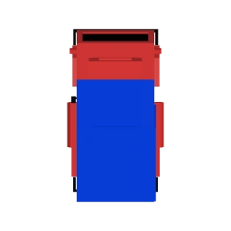
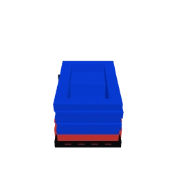

| File Path | public/models/truck-topdown.webp |
| File Size | 2,436 bytes (2.38 KB) |
| Native Dimensions | 256 x 256 px |
| Render Projection | Orthographic (Top +Y down) |
| Cab Direction | Facing North (-Z / Screen UP) |
| Anchor Coordinate | (128, 128) - Exact 50% / 50% |
| Materials Rendered | RedPaint, BlackWindow, BlackMatte, RedPaint.001 |

| File Path | public/models/truck-chase.webp |
| File Size | 2,818 bytes (2.75 KB) |
| Native Dimensions | 256 x 256 px |
| Camera Pitch | 36 deg Oblique Perspective |
| Cab Direction | Facing Forward (Upward on screen) |
| Anchor Coordinate | (128, 184) - Ground Axle Baseline |
| Materials Rendered | RedPaint, BlackWindow, BlackMatte, RedPaint.001 |
1. Double-Tilt Phenomenon in Marker B: When `truck-chase.webp` (already rendered at 36 deg oblique pitch) is placed flat on the map plane inside `perspective(900px) rotateX(50deg)`, it undergoes an additional vertical compression of $\cos(50^\circ) \approx 0.64$. This produces an excessively squashed, foreshortened appearance.
2. Counter-Scale in Marker C: Applying `scaleY(1.56)` restores the vertical aspect ratio, but creates uneven pixel stretch along the Y axis.
3. Upright Billboarding in Marker D: Counter-rotating the inner wrapper with `rotateX(-50deg)` using `transform-origin: 50% 72%` causes the 3D-rendered chase sprite to stand completely upright on the tilted road surface, creating an authentic 3D pop-out effect with exact ground anchor stability.
4. Top-Down in 2D vs 3D (Marker A): In 2D mode, Marker A provides a clean, accurate orthographic map icon. In 3D mode, switching dynamically from `truck-topdown.webp` to `truck-chase.webp` with upright billboarding delivers the best visual clarity.